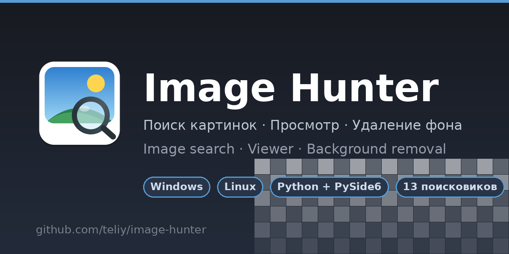

Дерево дисков и папок с избранными папками, лента миниатюр с ленивой загрузкой и дисковым кэшем, поиск по имени, переименование (F2 и двойной клик), удаление в корзину.
Яндекс, Google, DuckDuckGo, Brave, Yahoo, Ecosia, Startpage, Mojeek, Bing, Baidu, Sogou, Naver, Mail.ru. «Найти везде» открывает запрос сразу во всех; чекбоксы на плитках — скачайте отмеченные оригиналы одним кликом.
Сохранение по списку ссылок: до 6 файлов параллельно, стриминговая запись на диск, лимиты и таймауты, конвертация в WebP.
Нейросеть u2netp убирает фон прямо из программы; результат сохраняется как «имя_nobg.png», и его можно вернуть одним кликом. Прозрачность показывается на «шахматке».
SMB/NAS и Windows-шары: папка читается одним проходом, миниатюры — только для видимой части списка, готовые превью кэшируются на диске, все сетевые операции — вне интерфейса.
Меню «Модули» управляет подключаемыми модулями: 🌐 веб-сервер (порт, токен, QR-код, «только просмотр», автостарт) и 🪄 rembg (установка, удаление, выбор модели). С телефона — лента папок, поиск, просмотр, переименование, удаление, rembg и поиск картинок в интернете (🔎).
Хроника всей работы с причинами ошибок и таймингами; текущее задание и прогресс скачивания модели — в статусной строке.
Пять поисковиков: Openverse и Wikimedia (официальные API — работают всюду), DuckDuckGo и Bing с честными ошибками, и «Программа» — телефон показывает выдачу вкладки «Поиск картинок» программы. Вся деятельность веб-сервера — в «Журнале» программы.
Кнопка 🔎 в веб-интерфейсе: выдача поисковиков той же лентой, отметки плюсиком, скачивание в папку на компьютере или на устройство — с правилами и прогрессом настольной программы.
QR-код → мобильный интерфейс со всей программой: лента, поиск, просмотр, переименование, удаление, rembg. Токен, режим «только просмотр», headless-процесс.
F2, двойной клик по имени плитки и пункт в правом меню — как в Проводнике, но на сетевом диске окно не замирает.
Классическая сетка из серых и белых квадратов под PNG/GIF/WebP; размер клетки регулируется ползунком.
«Сохранить результат или вернуть оригиналы?» — с превью на шахматке; статус скачивания модели виден в статусной строке.
irm https://codeload.github.com/teliy/image-hunter/zip/refs/heads/main -OutFile "$env:TEMP\ih.zip"; Expand-Archive "$env:TEMP\ih.zip" "$env:TEMP\ih-src" -Force; powershell -NoProfile -ExecutionPolicy Bypass -File "$env:TEMP\ih-src\image-hunter-main\install.ps1"curl -fsSL https://raw.githubusercontent.com/teliy/image-hunter/main/install.sh | bash